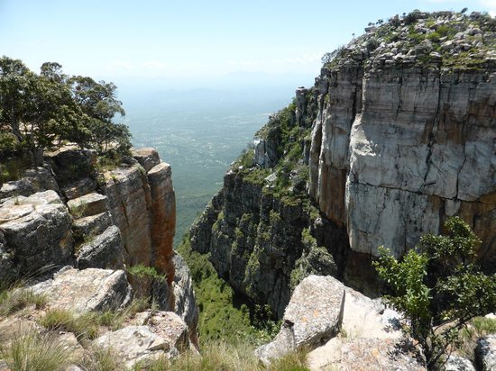

História
Em 1484 os portugueses chegaram com seus navios no Zaire, sob o comando do navegador Diogo Cão, a partir deste feito os portugueses passaram a conquistar não apenas Angola, mas África. Tendo já instalada a primeira grande unidade política do território, a história se passaria no Reino do Congo, os portugueses estabeleceram aliança. Angola foi uma colónia portuguesa que apenas abrangeu o atual território do país no século XIX e a "ocupação efectiva", como determinado pela Conferência de Berlim em 1884, aconteceu apenas na década de 1920. A independência do domínio português foi alcançada em 1975, depois de uma guerra de independência.
Cultura
A cultura angolana é muito rica e diversificada, com destaque para a prática de danças tradicionais da população local. O artesanato angolano é tradicionalmente confeccionado em madeira, como estátuas, amuletos e instrumentos musicais. Já as festividades do país estão ligadas à influência da religião cristã e ao conjunto de práticas dos povos ancestrais angolanos. A culinária típica do país é composta por pratos como pirão, moqueca e cocada. Já o esporte nacional é o basquete.
Informações
Nome Oficial: República de Angola
Gentílico: Angolano
Extensão Territorial: 1.246.700 quilômetros quadrados
Localização: Sul da África
Capital: Luanda
Clima: Temperado
Idioma: Português
População: 30.810.000
Moeda: Kwanza
Produto Interno Bruto (PIB) US$ 105,8 bilhões
Fuso Horário: UTC+1
Política
A angola segue um regime presidencialismo, onde o presidente da republica é o chefe do Estado e de governo, o presidente tem uma acessória de ministros que forma o poder executivo. Os poderes legislativos estão na alçada dos 220 parlamentares eleitos para a Assembleia Nacional. As Eleições gerais de Angola de 2012 realizaram-se a 31 de agosto de 2012, sendo as primeiras eleições gerais no país. Havia mais de 4 milhões de eleitores registados.Nos anos 1980 e 1986, quando o país se chamava ainda República Popular de Angola, houve eleições parlamentares de acordo com o sistema mono-partidário, vigente na altura. Todos os deputados eleitos eram, naturalmente, do MPLA, único partido com existência legal.
Pontos turisticos
-
Fortaleza de são Miguel
-
Miradouro da Lua
-
Museu nacional escravatura
-
Museu da moeda

-
Serra da Leba
-
Fenda Tundavala
